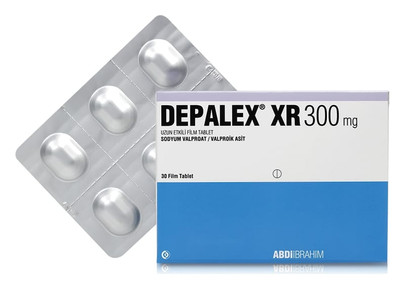

Depalex XR 300 mg Uzun Etkılı Film Kaplı Tablet, 30 Adet

Ne için kullanılır
KT · Bölüm 1• DEPALEX XR, antiepileptikler (epilepsi tedavisinde kullanılan ilaçlar) adı verilen bir ilaç grubuna dahildir. • DEPALEX XR, 300 mg sodyum valproat aktivitesine eşdeğer 199,8 mg sodyum valproat ve 87 mg valproik asit içerir. Sodyum valproat beyin üzerinde sakinleştirici etkiye sahiptir. • DEPALEX XR, beyaz, çentikli, oblong film kaplı tablet içeren Al/ Al blisterde kullanıma sunulmuştur. • DEPALEX XR, epilepsi (sara) hastalığının tedavisinde kullanılır. Birçok epilepsi türünün tedavisinde etkilidir. • DEPALEX XR, bipolar bozukluklara (ruhsal durumdaki zıt yönlü değişiklikler) bağlı maninin (taşkınlık nöbeti) tedavisinde ve tedaviye cevap veren hastalarda sürdürüm tedavisi olarak kullanılabilir. • DEPALEX XR 300 mg, erişkinlerin ve 6 yaşın üzerindeki ağırlığı en az 17 kg olan çocukların kullanımı içindir.